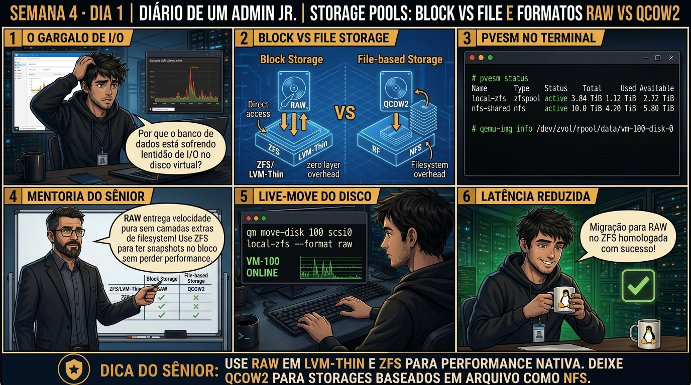

DIARIO DE UM ADMIN JR. | PROXMOX VE & PBS — DA BASE AO CLUSTER
🔗 Conecta com a Semana 3: Você dominou instâncias e containers. Agora você entra no subsistema mais crítico de qualquer datacenter: o armazenamento corporativo. Hoje você desvenda a diferença entre storages baseados em arquivos (File-level) e storages de blocos brutos (Block-level).
🔓 Privilégio de hoje: Arquitetura de Storage do Datacenter. Você audita /etc/pve/storage.cfg e escolhe formatos de disco para alta velocidade de I/O.
Semana 4 · Dia 1 | Nível Júnior — Storage Corporativo & ZFS
Arquitetura de Storage: File-level vs Block-level e RAW vs QCOW2
Entendendo Directory, NFS, LVM-Thin e ZFS no Proxmox VE para máxima performance
ANTES DE ALTERAR, OBSERVE. DEPOIS DE ALTERAR, VALIDE.

1. O chamado
Você recebeu o chamado #4001: 'A equipe de virtualização precisa criar um novo banco de dados transacional de alto IOPS e uma área compartilhada para ISOs e backups no pve01. O storage atual possui um volume Directory (EXT4) e um pool ZFS (ZPOOL). O chamado exige: (1) Entender por que armazenar discos de VM em formato QCOW2 sobre EXT4 gera penalidade de dupla camada de filesystem; (2) Migrar discos de alta performance para Block-level (ZFS ZVOL) em formato RAW; (3) Auditar o arquivo central /etc/pve/storage.cfg; e (4) Validar a matriz de suporte a snapshots por tipo de storage.'
💡 Passa o mouse nas palavras destacadas pra ver uma dica rápida — clica se quiser a explicação completa com analogia.
2. O sênior te conta
🧑🏫 antes dos termos técnicos, a história de hoje
Hoje o Júnior estava configurando um novo storage pool e me perguntou por que não podíamos salvar todos os discos virtuais em arquivos .qcow2 dentro de uma pasta ext4 simples. Contei pra ele sobre as camadas invisíveis de penalidade de I/O que isso cria em servidores de banco de dados.
Expliquei a grande divisão dos storages no Proxmox: File-level (NFS, SMB, Diretório local) vs Block-level (LVM-Thin, ZFS, Ceph RBD). Em storages de bloco, o disco virtual é um volume bruto (RAW) gerenciado diretamente pelo subsistema de blocos do kernel, entregando a latência mínima e máximo throughput que bancos de dados exigem.
Mostrei também que o formato QCOW2 brilha em storages NFS por suportar snapshots Copy-on-Write em rede. Usamos o comando qm move-disk para migrar um disco a quente entre storages sem desligar a VM. O Júnior aprendeu a escolher o storage certo para cada carga de trabalho.
3. Decodificador de conceitos
Clica em qualquer termo pra ver a definição completa e uma analogia do dia a dia:
4. Ferramentas e leitura da evidência
Comando / Parâmetro
O que observar e por que importa
pvesm status
Exibe o status de todos os storages configurados no nó/cluster, seu tipo, uso e integridade.
cat /etc/pve/storage.cfg
Arquivo central do cluster onde residem as definições de todos os pools de storage.
pvesm list local-zfs
Lista todas as imagens de disco de VMs (ZVOLs) e containers alocados no pool ZFS.
qemu-img info /var/lib/vz/images/100/vm-100-disk-0.qcow2
Audita os metadados internos de um arquivo de disco QCOW2.
$ cat /etc/pve/storage.cfg
dir: local
path /var/lib/vz
content iso,vztmpl,backup
zfspool: local-zfs
pool rpool/data
content rootdir,images
sparse 1
$ pvesm status
Name Type Status Total Used Available %
local dir active 100862464 12450816 83248384 12.34%
local-zfs zfspool active 1845493760 458120192 1387373568 24.82%
# Comparação de formato:
# local (Directory): Discos como arquivos (.qcow2 ou .raw) em /var/lib/vz/images/
# local-zfs (Block-level): Discos como volumes ZVOL (/dev/zvol/rpool/data/vm-100-disk-0)
5. Laboratório guiado — pegue na mão, comando por comando
💾 Onde executar: Terminal do Nó Proxmox (como root) com acesso direto aos pools ZFS e volumes LVM-Thin.
Segurança: Execute as alterações em volumes e storages de laboratório. Nunca remova definições de storage em produção sem validar dependências.
Ação: Inspecione os tipos de storage cadastrados e formatos suportados no storage.cfg.
Por que fizemos isso: Inspecionar /etc/pve/storage.cfg revela as propriedades dos pools (dir, lvmthin, zfspool, nfs) e seus formatos suportados (RAW vs QCOW2).
Cilada comum: Tentar forçar o formato QCOW2 em storages de bloco puro como LVM ou ZFS, gerando erro de incompatibilidade no provisionamento.
Ação: Crie um disco virtual em formato RAW em storage de bloco (LVM-Thin/ZFS).
pvesm alloc local-zfs 100 vm-100-disk-1 10G
Resultado esperado: Mapeamento claro das flags content iso,vztmpl e content images,rootdir.
Por que fizemos isso: Usar formato RAW em storages de bloco elimina camadas intermediárias de arquivo e entrega a máxima performance de I/O para bancos de dados.
Cilada comum: Usar RAW em storages baseados em diretório ou NFS tradicional se você pretende usar snapshots com estado de memória RAM.
Ação: Crie um disco virtual em formato QCOW2 com Copy-on-Write em storage NFS.
Resultado esperado: Listagem dos volumes vm-XXX-disk-X criados diretamente como blocos brutos.
Por que fizemos isso: Usar QCOW2 em storages NFS permite recursos de Copy-on-Write, snapshots e alocação dinâmica (thin provisioning).
Cilada comum: Esquecer de monitorar o crescimento de arquivos QCOW2 em pastas locais, correndo risco de lotar o disco sem aviso prévio.
Ação: Mova um disco virtual a quente entre storages de bloco e arquivo com qm move-disk.
qm move-disk 100 scsi0 local-zfs --delete 1
Resultado esperado: Visualização das pastas de imagens de VMs locais.
Por que fizemos isso: O comando qm move-disk move discos virtuais entre storages diferentes a quente sem desligar a VM.
Cilada comum: Interromper o processo de move-disk via kill bruto no terminal, corrompendo a tabela de alocação do storage de destino.
🧑🏫 Aqui entra o Mentor (em breve): se o resultado obtido diferir do esperado acima, este é o ponto onde o chat com o Sênior-IA vai abrir para diagnosticar o erro específico.
Ação: Documente a matriz de storages recomendada por perfil de aplicação no datacenter.
# Matriz de formatos RAW vs QCOW2 homologada.
Resultado esperado: Relatório aprovado segregando storages de blocos para produção e storages de arquivos para ISOs e backups.
Por que fizemos isso: Registrar os storages homologados por tipo de aplicação (ZFS para BDs, NFS para backups) organiza a governança de storage da empresa.
Cilada comum: Misturar storages de alta e baixa performance na mesma VM sem critério de arquitetura.
6. Antes de ver as opções — tenta responder
🧠 Recall ativo: Qual é a penalidade de I/O ao rodar uma imagem de disco QCOW2 dentro de uma pasta formatada em EXT4/XFS em comparação com rodar um volume RAW diretamente em ZFS (ZVOL) ou LVM-Thin?
Ao usar QCOW2 sobre EXT4, cada operação de escrita passa por duas camadas completas de sistema de arquivos e journals (o filesystem do SO convidado dentro do QCOW2 + o filesystem EXT4 do host), gerando 'Double Journaling' e alta latência de I/O. Em ZFS ZVOL ou LVM-Thin (Block-level), o Proxmox entrega um dispositivo de bloco bruto (RAW) diretamente ao QEMU, eliminando intermediários e entregando latência quase nativa de SSD/NVMe.
QUESTÃO 1 de 3
7. Questão comentada — clica numa alternativa
Qual tipo de armazenamento no Proxmox VE oferece suporte NATIVO a snapshots atômicos, compressão em tempo real e proteção contra corrupção silenciosa de dados (Bit Rot) ao nível de blocos?
💡 Analogia do Sênior para Fixar: Na arquitetura do Proxmox sobre Arquitetura de Storage: File-level vs Block-level e RAW vs QCOW2: O KVM/QEMU opera como o motorista dedicado de cada passageiro, alocando recursos virtuais em contato direto com o kernel.
QUESTÃO 2 de 3 — cenário de erro real
7.1 Storage rejeitando upload de ISO com erro de 'content type not allowed'
Um técnico tentou fazer upload de uma ISO do Debian para o storage 'local-zfs' e recebeu a mensagem de erro:
$ pvesm alloc local-zfs 100 debian.iso 1000M
TASK ERROR: storage 'local-zfs' does not support content type 'iso' (allowed: rootdir, images)
Por que o Proxmox rejeitou o upload da ISO no storage local-zfs?
💡 Analogia do Sênior para Fixar: Ao diagnosticar problemas em Arquitetura de Storage: File-level vs Block-level e RAW vs QCOW2: É como inspecionar as conexões do storage e o barramento PCIe antes de declarar falha de software.
QUESTÃO 3 de 3 — detalhe que confunde todo iniciante
7.2 RAW vs QCOW2: Quando escolher cada formato de disco?
Você está criando uma VM em um storage Directory (NFS ou pasta local) e precisa escolher o formato do disco virtual:
Qual é a diretriz correta para a escolha do formato?
💡 Analogia do Sênior para Fixar: A governança e resiliência em Arquitetura de Storage: File-level vs Block-level e RAW vs QCOW2: Funciona como a política de contenção e redundância do datacenter, garantindo que o cluster nunca perca quorum.
8. Procedimento profissional
Inspecione a topologia de storages cadastrada no Proxmox com pvesm status.
Para storages de alta performance de discos de VMs (images) e LXC (rootdir), utilize ZFS Pools ou LVM-Thin.
Para armazenamento de arquivos de instalação (ISO), templates (vztmpl) e backups (vzdump), configure storages baseados em arquivos (Directory, NFS ou SMB).
Mantenha a diretiva content rigorosamente restrita em cada entrada de /etc/pve/storage.cfg.
Audite a saúde dos volumes ZVOL no ZFS executando zfs list.
Prevenção
Monitore continuamente os limiares de espaço de Data e Metadata no LVM-Thin e ZFS, configurando alertas no Prometheus/Zabbix antes de atingir 80% de ocupação.
9. Validação e encerramento
Você compreende a distinção arquitetural entre File-level e Block-level storage.
Você sabe quando utilizar o formato RAW (bloco cru) vs QCOW2 (snapshots em arquivo).
Você domina as diretivas do arquivo /etc/pve/storage.cfg e a restrição por 'content type'.
O planejamento de armazenamento corporativo foi homologado com excelência.
Rollback e limites
Para mover o disco de uma VM de um storage Directory para um pool ZFS online, utilize a opção 'Move Disk' na interface ou qm move_disk ID scsi0 local-zfs.
💡 Sobre repetição espaçada: A mecânica interna de Pools, VDEVs e Resiliência do ZFS será construída do zero amanhã no Dia 2.
10. Resposta final
Alternativa correta: B. A resposta correta é a B: o ZFS é o storage corporativo unificado que oferece snapshots nativos, compressão LZ4 e autocorreção de dados em nível de blocos.
🔓 O que você desbloqueou hoje
Arquitetura de storage compreendida com perfeição! Amanhã, no Dia 2, você dominará o ZFS do Zero: construindo Pools, dimensionando VDEVs (Mirror vs RAIDZ), configurando compressão LZ4 e extraindo o máximo de IOPS do hardware.